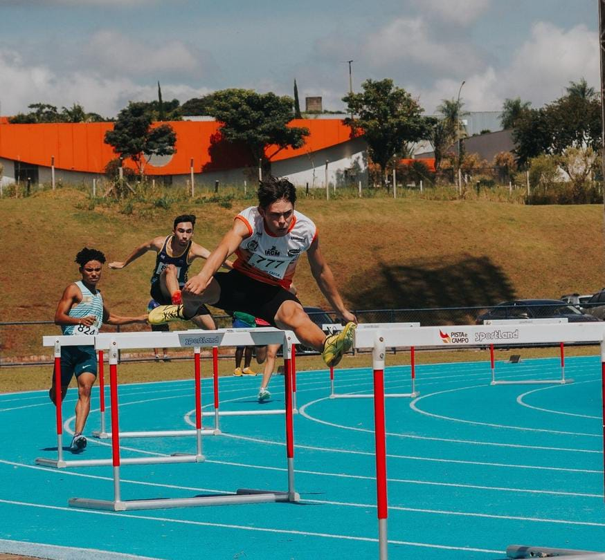

André Roberto Azevedo
Atleta e aluno do primeiro período do TADS Integrado
Olá tudo bem amigo!!
Eu sou o André, estou cursando o curso de Tecnologia e Analise De Sistema(TADS ou TDS), Nasci em
Ivaiporã PR mas cresci na cidade vizinha Jardim Alegre.
Agora morando em Campo Mourão PR a um ano vindo pelo projeto do atletismo de Campo Mourão (Equipe FECAM
ASSERCAM IACM) buscando melhores marcas
no atletismo vim para cá. No ano de 2023 fui: vice-campeão paranaense Sub-20 e Sub-18, 6 colocado no
Campeonato Brasileiro Sub-18 em Aracaju-SE
e 5 quinto colocado no Ranking Sub-20 Brasileiro. Bem isso são alguns resultados mas agora voltando a
área acadêmica: tenho um curso básico de HTML 5
e CSS3 Modulo 1 e também curso básico de JavaScript.
Minha meta e me torna um bom Dev Front-End criador de sites web. :)
-Desenvolvedor solo do Dangeon Survival-